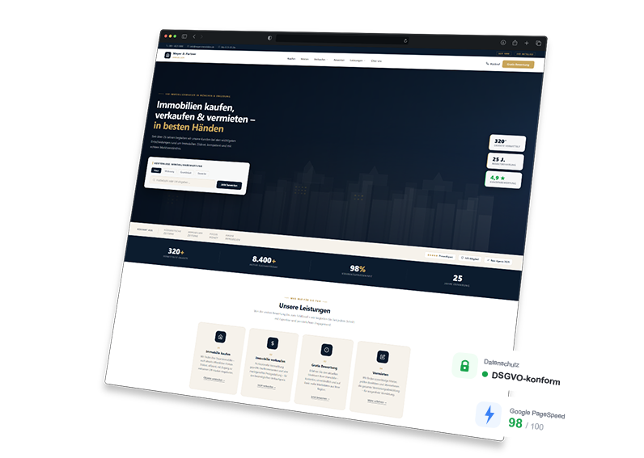

Eigentümer und Kaufinteressenten suchen ihren Makler heute zuerst online. Mit einer überzeugenden Makler-Website gewinnst Du Vertrauen und Anfragen, bevor Du das erste Gespräch führst.

Das sind die häufigsten Probleme von Immobilienmaklern ohne professionelle Online-Präsenz
Ohne optimierte Makler-Website erscheinst Du in lokalen Suchergebnissen kaum – und Eigentümer, die einen Makler in Deiner Region suchen, beauftragen stattdessen die Konkurrenz.
Eine veraltete oder lieblose Website schadet dem ersten Eindruck. Kaufinteressenten entscheiden oft in Sekunden, ob sie einem Makler vertrauen – oder weiterklicken.
Ohne klare Call-to-Actions und Lead-Formulare bleibt die Website ein digitaler Flyer statt ein aktiver Akquise-Kanal. Potenzielle Verkäufer und Käufer springen ab, ohne Kontakt aufzunehmen.
Über 70 % der Makler-Suchen finden mobil statt. Eine nicht mobiloptimierte Website mit langsamen Ladezeiten kostet direkt Anfragen und Vertrauen.
Ich baue Websites, die Dich als Experten positionieren, Eigentümer und Käufer überzeugen und Dir planbar neue Mandate bringen – individuell statt von der Stange.
Wenn jemand "Immobilienmakler München" oder "Haus verkaufen Berlin" sucht, soll Dein Name ganz oben erscheinen. Ich optimiere Deine Website gezielt für lokale Suchanfragen – so kommen Eigentümer aus Deiner Region zu Dir.
Deine Immobilienangebote werden mit hochwertigen Fotos, Grundrissen, Beschreibungen und Exposé-Download überzeugend präsentiert – auf Desktop und Smartphone gleichermaßen ansprechend.
Ein gezieltes Bewertungsformular oder ein Kontaktweg speziell für Verkäufer macht aus Deiner Website eine Akquise-Maschine. Ich gestalte den Weg vom Besuch zur Anfrage so einfach wie möglich.
Im Immobiliengeschäft zählt Vertrauen über alles. Ich gestalte Dein Profil, Deine Referenzen und Kundenstimmen so, dass Eigentümer und Interessenten sofort erkennen: Hier ist ein Profi am Werk.
Ein interaktives Bewertungs-Tool oder ein ansprechendes Formular "Wie viel ist meine Immobilie wert?" zieht Verkaufsinteressenten aktiv an und liefert Dir qualifizierte Leads direkt ins Postfach.
Ob Smartphone, Tablet oder Desktop – Deine Makler-Website lädt blitzschnell, sieht professionell aus und führt Besucher klar zur nächsten Handlung: Objekt anfragen, Termin buchen oder anrufen.
Egal ob Einzelmakler oder etablierte Agentur – ich baue Websites für alle Bereiche der Immobilienbranche.
Ich lerne Dein Geschäft kennen: Welche Region betreust Du, was unterscheidet Dich von anderen Maklern und welche Ziele hast Du? Das dauert ca. 15 Minuten – kostenlos und unverbindlich.
Du bekommst ein klares Konzept und ein faires Angebot. Keine versteckten Kosten, kein Fachjargon – nur eine ehrliche Einschätzung, wie ich Dich als Immobilienexperte digital positioniere.
Ich baue Deine Makler-Website, Du schaust Dir Zwischenstände an und gibst Feedback. Einfache Seiten sind oft schon in 1–2 Wochen fertig und online.
Deine Website geht online. Ich bleibe erreichbar – für Anpassungen, neue Objekte und Fragen. Du wirst nicht allein gelassen.
Kostenlos & unverbindlich
Ich erstelle Dir eine kostenlose Demo-Website – individuell für Dein Maklerprofil und Deine Region. Kein Risiko, keine Verpflichtung.
Demo jetzt anfordern →Eine starke Makler-Website ist nicht nur Visitenkarte – sie ist Dein effektivster Akquise-Kanal, der rund um die Uhr für Dich arbeitet
Eine lokal optimierte Website sorgt dafür, dass Eigentümer in Deiner Region Dich finden – bevor sie einen anderen Makler beauftragen. So baust Du Dir einen konstanten Strom an Neuanfragen auf.
Die meisten Eigentümer haben ihren Makler schon ausgesucht, bevor der erste Anruf stattfindet. Eine professionelle, überzeugende Website entscheidet, ob Du auf der Shortlist landest – oder nicht.
Mit einer gut gemachten Website kommen Anfragen zu Dir, statt dass Du aktiv nachlaufen musst. Das spart Zeit und liefert qualifiziertere Kontakte, die schon von Deiner Kompetenz überzeugt sind.
Viele Makler sind online schwach aufgestellt. Wer jetzt in eine starke Online-Präsenz investiert, sichert sich einen messbaren Wettbewerbsvorteil gegenüber der lokalen Konkurrenz.
Alles, was Du vor dem Start wissen möchtest
Lass uns in einem kurzen, kostenlosen Gespräch herausfinden, wie ich Dich als Immobilienmakler digital überzeugend positioniere. Unverbindlich, unkompliziert und auf Augenhöhe.
Jetzt Gespräch vereinbaren